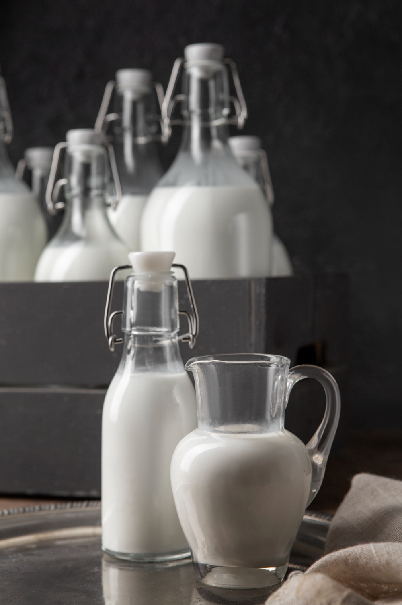
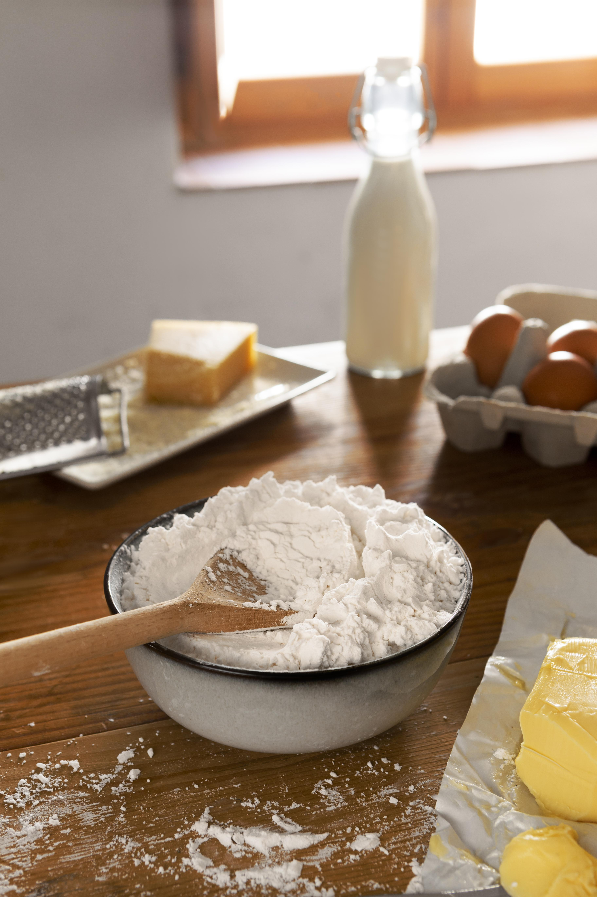

LECHE
Primer ingrediente del arequipe-

AZUCAR
Segundo ingrediente del arequipe.

HARINA
Tercer ingrediente del arequipe.
En esta sección, vamos a sumergirnos en los deliciosos ingredientes que hacen posible el exquisito sabor del arequipe, así como en el meticuloso proceso de preparación que convierte estos elementos simples en un manjar irresistible..
El arequipe, una delicia de la cocina latinoamericana, requiere ingredientes de la más alta calidad para alcanzar su máximo potencial de sabor. Aquí te presentamos los protagonistas de esta dulce aventura:
Primer ingrediente del arequipe-
Segundo ingrediente del arequipe.
Tercer ingrediente del arequipe.
Se comienza adquiriendo una cantidad adecuada de leche fresca de alta calidad. Esta leche se vierte cuidadosamente en una cacerola grande y se coloca sobre el fuego. Es importante vigilar constantemente el calor para evitar que la leche se queme.
Una vez que la leche ha alcanzado una temperatura adecuada, se procede a colarla utilizando un colador fino para eliminar cualquier impureza o residuo. Este paso garantiza que el arequipe tenga una textura suave y cremosa..
Después de que la leche haya alcanzado una temperatura adecuada, se procede a agregar el azúcar gradualmente, asegurándose de disolverla por completo. Es fundamental disolver el azúcar de manera uniforme en la leche, sin dejar ni un solo grumo en el fondo de la cacerola.
Para lograr esto, se revuelve la mezcla de manera constante y delicada, permitiendo que el calor de la leche disuelva gradualmente el azúcar. Este paso es crucial para garantizar que el arequipe tenga la dulzura perfecta en cada cucharada y una textura suave y homogénea..
Una vez que la leche ha sido colada y la cantidad ha disminuido debido a la evaporación natural durante el proceso de cocción, se procede a preparar una harina de arroz para agregar a la mezcla. La harina de arroz se utiliza para ayudar a espesar aún más la mezcla y proporcionar una textura suave y cremosa al arequipe.
La harina de arroz actúa como un agente espesante natural, ayudando a dar cuerpo y consistencia al arequipe a medida que continúa cocinándose a fuego lento. A medida que la mezcla espesa y se reduce aún más, se desarrolla un aroma delicioso y una textura sedosa que es característica del auténtico arequipe casero.
Nuestra prioridad es la calidad. Ofrecemos productos de alta gama.
Garantizamos entregas rápidas para que recibas tus pedidos a tiempo.
Estamos disponibles todo el día para ayudarte con cualquier consulta.